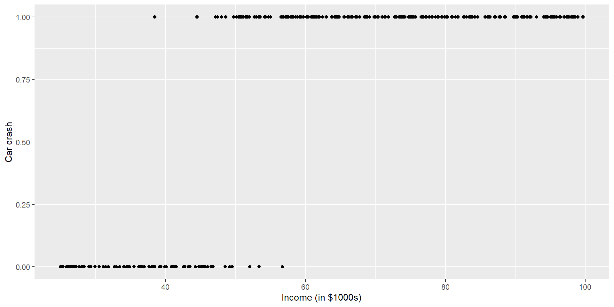
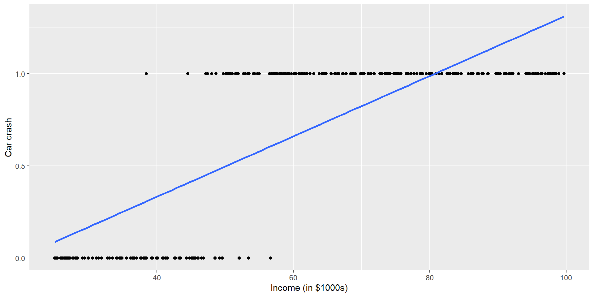
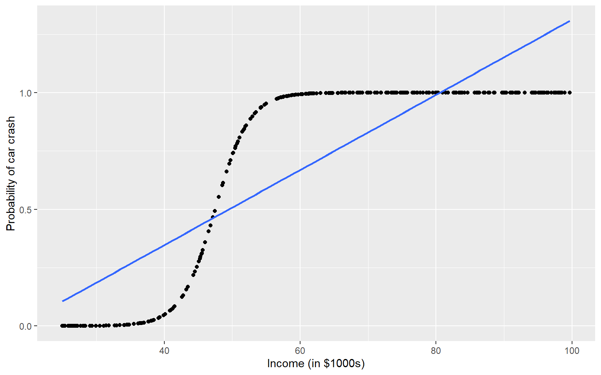
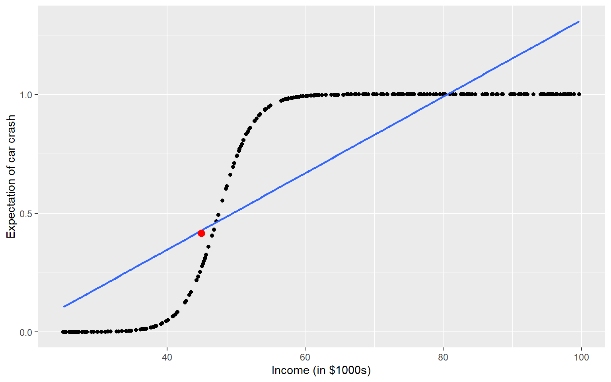
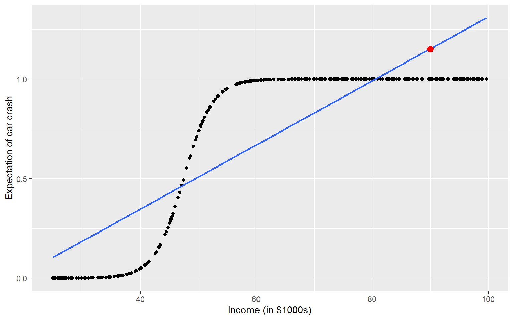
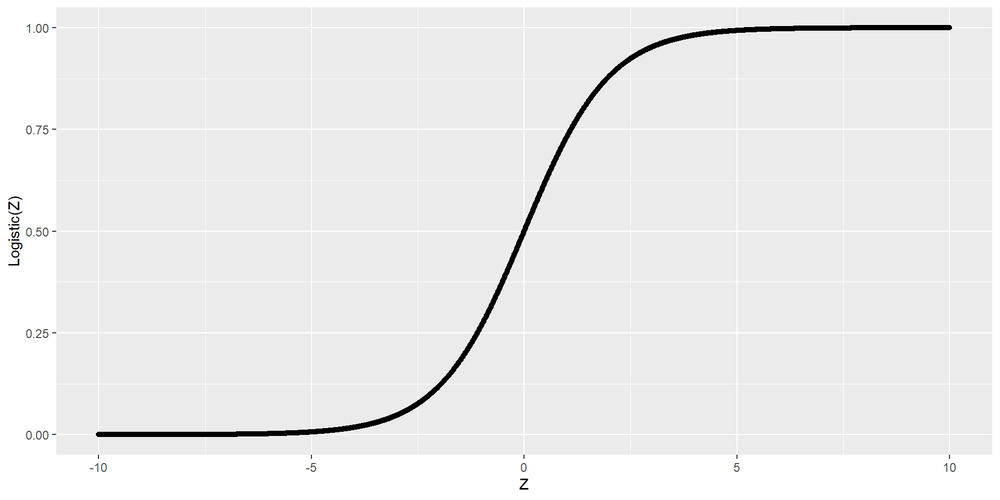
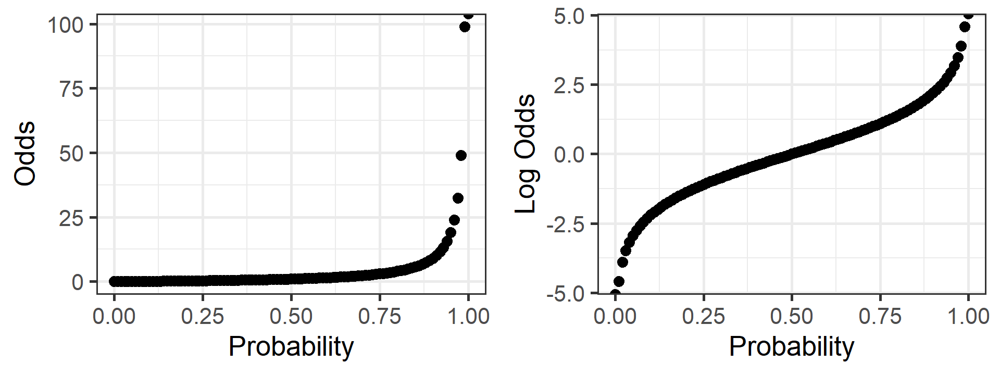

1
0.4151667 Logistic regression
Specify variable type (think about the possible values)
Temperature
Presence of Alzheimer’s
Rent
Computer operating system
Daily number of customers
Income class
Which could we model with linear regression?
Identify the response variable type:
Can we model using linear regression anyways?
Let’s simulate data…

What does it mean to fit a line to this data?

We don’t get an error, but …

What is our expecation for people with an income of $45,000?
1
0.4151667 
What is our expecation for people with an income of $90,000?
1
1.151587 
Linear regression assumes \[E[Y_i | X_i ] = \beta_0 + \beta_1 X_{1, i} + ... + \beta_p X_{p, i} + \epsilon_i \text{ and } \epsilon_i\sim N(0, \sigma^2)\]
so
\[E[Y_i | X_{1, i}, ..., X_{p, i}] = \beta_0 + \beta_1 X_{1, i} + ... + \beta_p X_{p, i}\]
What is the expectation of a binary variable?
We can fit a linear model for a binary response, but:
We can use a logistic model instead!
The logistic function ranges from 0 to 1
\[\text{logistic}(Z) = \frac{e^Z}{1 + e^Z}\]

Let \(Y_i | X_{1, i}, ..., X_{p, i} \sim Bernoulli(\pi_i)\), which means \(E[Y_i | X_{1, i}, ..., X_{p, i}] = \pi_i\)
The logistic regression model is \[E[Y_i | X_{1, i}, ..., X_{p, i}] = \pi_i = \frac{e^{\beta_0 + \beta_1 X_{1, i} + ... + \beta_p X_{p, i}}}{1 + e^{\beta_0 + \beta_1 X_{1, i} + ... + \beta_p X_{p, i}}}\]
\[\pi_i = \frac{e^{\beta_0 + \beta_1 X_{1, i} + ... + \beta_p X_{p, i}}}{1 + e^{\beta_0 + \beta_1 X_{1, i} + ... + \beta_p X_{p, i}}}\]
Through some algebra we can rewrite the model as \[\log(\frac{\pi_i}{1 - \pi_i}) = \beta_0 + \beta_1 X_{1, i} + ... + \beta_p X_{p, i}\]
\[\log(\frac{\pi_i}{1 - \pi_i}) = \beta_0 + \beta_1 X_{1, i} + ... + \beta_p X_{p, i}\]
What are odds?
Relationship between probability and odds

\[\log(\frac{\pi}{1 - \pi}) = \beta_0 + \beta_1 X_1 + ... + \beta_{p-1} X_{p-1}\] Now we have a model that connects \(E[Y|X] = \pi\) to our data, but how do we interpret the parameters, \(\beta_j\)’s?
Recall for linear regression: \(E[Y|X] = \beta_0 + \beta_1 X\)
\[\log(\frac{E[Y_i|X_i]}{1 - E[Y_i|X_i]}) = \beta_0 + \beta_1 X_i\]
Odds Ratio
\(e^{\beta_1} = \frac{\pi_a}{1-\pi_a} / \frac{\pi_b}{1-\pi_b}\)
We typically interpret the odds ratio \(e^{\beta_1}\) instead of log odds ratio \(\beta_1\)
If \(e^{\beta_1}\) = 1
If \(e^{\beta_1}\) < 1
If \(e^{\beta_1}\) > 1
In linear regression we used a t-test to test for statistically significant features.
Beware in logistic regression there are different tests that can be used (we will talk about these)
Know which one your software is using!
\[\log\left(\frac{E[Y_i | X_{1i}, ..., X_{pi}]}{1 - E[Y_i | X_{1i}, ..., X_{pi}]}\right) = \beta_0 + \beta_1 X_{1i} + ... + \beta_p X_{pi}\]
We often let \(\pi_i = E[Y_i | X_{1i}, ..., X_{pi}]\) so our model is written
\[\log\left(\frac{\pi_i}{1 - \pi_i}\right) = \beta_0 + \beta_1 X_{1i} + ... + \beta_p X_{pi}\]
\(\beta_0\) is the log odds for when all \(X_i\)’s are zero.
\(\beta_1\) is the log odds ratio associated with a one unit increase in \(X_1\)
… with all other \(X_i\)’s held constant.
In our class we will focus on two common methods for hypothesis tests and confidence intervals
A retrospective sample of males in a heart-disease high-risk region of the Western Cape, South Africa. These data are taken from a larger dataset, described in Rousseauw et al, 1983, South African Medical Journal.
sbp systolic blood pressuretobacco cumulative tobacco (kg)ldl low density lipoprotein cholesteroladiposity body fatfamhist family history of heart diseasetypea type-A behaviorobesityalcohol current alcohol consumptionage age at onsetRows: 462
Columns: 11
$ row.names <dbl> 1, 2, 3, 4, 5, 6, 7, 8, 9, 10, 11, 12, 13, 14, 15, 16, 17, 1…
$ sbp <dbl> 160, 144, 118, 170, 134, 132, 142, 114, 114, 132, 206, 134, …
$ tobacco <dbl> 12.00, 0.01, 0.08, 7.50, 13.60, 6.20, 4.05, 4.08, 0.00, 0.00…
$ ldl <dbl> 5.73, 4.41, 3.48, 6.41, 3.50, 6.47, 3.38, 4.59, 3.83, 5.80, …
$ adiposity <dbl> 23.11, 28.61, 32.28, 38.03, 27.78, 36.21, 16.20, 14.60, 19.4…
$ famhist <chr> "Present", "Absent", "Present", "Present", "Present", "Prese…
$ typea <dbl> 49, 55, 52, 51, 60, 62, 59, 62, 49, 69, 72, 65, 59, 49, 54, …
$ obesity <dbl> 25.30, 28.87, 29.14, 31.99, 25.99, 30.77, 20.81, 23.11, 24.8…
$ alcohol <dbl> 97.20, 2.06, 3.81, 24.26, 57.34, 14.14, 2.62, 6.72, 2.49, 0.…
$ age <dbl> 52, 63, 46, 58, 49, 45, 38, 58, 29, 53, 60, 40, 17, 15, 53, …
$ chd <dbl> 1, 1, 0, 1, 1, 0, 0, 1, 0, 1, 1, 1, 0, 0, 0, 0, 0, 1, 1, 1, …\[\begin{equation*} \begin{split} \log(\frac{\pi_i}{1 - \pi_i}) &= \beta_0 + \beta_1 X_{\text{Blood pressure}, i}\\ &+ \beta_2 X_{\text{Family history}, i} + \beta_1 X_{\text{Age}, i} \end{split} \end{equation*}\]
Call:
glm(formula = chd ~ sbp + famhist + age, family = binomial, data = heart_data)
Coefficients:
Estimate Std. Error z value Pr(>|z|)
(Intercept) -4.500388 0.767490 -5.864 4.52e-09 ***
sbp 0.006404 0.005389 1.188 0.235
famhistPresent 0.943106 0.216915 4.348 1.37e-05 ***
age 0.056222 0.009239 6.086 1.16e-09 ***
---
Signif. codes: 0 '***' 0.001 '**' 0.01 '*' 0.05 '.' 0.1 ' ' 1
(Dispersion parameter for binomial family taken to be 1)
Null deviance: 596.11 on 461 degrees of freedom
Residual deviance: 505.24 on 458 degrees of freedom
AIC: 513.24
Number of Fisher Scoring iterations: 4Let’s test if systolic blood pressure should be in the model
\(H_0: \beta_1 = 0\)
\(H_A: \beta_1 \neq 0\)
We can do this with a Wald or Likelihood ratio test
Call:
glm(formula = chd ~ sbp + famhist + age, family = binomial, data = heart_data)
Coefficients:
Estimate Std. Error z value Pr(>|z|)
(Intercept) -4.500388 0.767490 -5.864 4.52e-09 ***
sbp 0.006404 0.005389 1.188 0.235
famhistPresent 0.943106 0.216915 4.348 1.37e-05 ***
age 0.056222 0.009239 6.086 1.16e-09 ***
---
Signif. codes: 0 '***' 0.001 '**' 0.01 '*' 0.05 '.' 0.1 ' ' 1
(Dispersion parameter for binomial family taken to be 1)
Null deviance: 596.11 on 461 degrees of freedom
Residual deviance: 505.24 on 458 degrees of freedom
AIC: 513.24
Number of Fisher Scoring iterations: 4The summary() function displays Wald Statistics.
Analysis of Deviance Table
Model 1: chd ~ famhist + age
Model 2: chd ~ sbp + famhist + age
Resid. Df Resid. Dev Df Deviance Pr(>Chi)
1 459 506.66
2 458 505.24 1 1.414 0.2344A probability of 0.02344 is not unlikely, so fail to reject \(H_0\).
We found no evidence (Likelihood ratio test p-value = 0.2344, df = 2) that the model with systolic blood pressure significantly improves the fit compared to the model with just family history and age.
Let’s test if systolic blood pressure and family history should be in the model
\(H_0: \beta_1 = \beta_2 = 0\)
\(H_A:\) At least one of \(\beta_1\) or \(\beta_2\) are zero
We can do this with a Wald or Likelihood ratio test
Wald test:
----------
Chi-squared test:
X2 = 75.0, df = 2, P(> X2) = 0.0So we can test subsets of predictors with a Wald test, but it is different…
Analysis of Deviance Table
Model 1: chd ~ age
Model 2: chd ~ sbp + famhist + age
Resid. Df Resid. Dev Df Deviance Pr(>Chi)
1 460 525.56
2 458 505.24 2 20.318 3.872e-05 ***
---
Signif. codes: 0 '***' 0.001 '**' 0.01 '*' 0.05 '.' 0.1 ' ' 1Let’s use the likelihood ratio test.
We found very strong evidence (likelihood ratio test p-value 3.9e-05) that including systolic blood pressure and family history improve the model fit, over a model with age only.
Via Likelihood Ratio: We can used the confint() function like we did with linear regression
2.5 % 97.5 %
(Intercept) -6.038659314 -3.02234201
sbp -0.004159741 0.01703609
famhistPresent 0.520038741 1.37140982
age 0.038573599 0.07486714Via Wald: We can used the confint.default() function